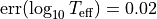
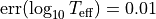
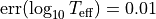
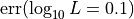

Available Methods¶
[ ]:
import numpy as np
import pandas as pd
import ysoisochrone
df_prop = pd.read_csv('example_targets.csv')
The Bayesian Inference Approach¶
Estimating stellar ages and masses in the Bayesian inference approach is the primary method that is focused in ysoisochrone. This method was first introduced in Pascucci et al. (2016). The stellar masses, ages, and associated uncertainties are estimated from the stellar effective temperature ( ), bolometric luminosity (
), bolometric luminosity ( ), and their uncertainties. Uniform priors are assumed, and the
likelihood functions are defined following Andrews et al. (2013).
), and their uncertainties. Uniform priors are assumed, and the
likelihood functions are defined following Andrews et al. (2013).
The pre-main-sequence evolutionary models from both Feiden (2016) and Baraffe et al. (2015) are adopted for hot ( ) and cool stars (
) and cool stars ( ), respectively. The same combination of the pre-main-sequence evolutionary models was also adopted in Manara et al. (2022) as one
of the review chapter in Protostars and Planets VII.
), respectively. The same combination of the pre-main-sequence evolutionary models was also adopted in Manara et al. (2022) as one
of the review chapter in Protostars and Planets VII.
We provide a simple way to use this as
[ ]:
df_prop_t = df_prop.loc[:0]
best_logmass_output_t, best_logage_output_t, _, _ =\
ysoisochrone.bayesian.derive_stellar_mass_age(df_prop_t, model='Baraffe_n_Feiden', plot=True)
0%| | 0/1 [00:00<?, ?it/s]/Users/dingshandeng/github/ysoisochrone/ysoisochrone/plotting.py:116: MatplotlibDeprecationWarning: Starting from Matplotlib 3.6, colorbar() will steal space from the mappable's axes, rather than from the current axes, to place the colorbar. To silence this warning, explicitly pass the 'ax' argument to colorbar().
cb = plt.colorbar(im)
100%|██████████| 1/1 [00:00<00:00, 1.68it/s]
where you just simply set the model='Baraffe_n_Feiden' in the function. Here we also turn on the plot = True to show the intermediate diagnoostic plot.
In this approach, also follow the choice made in Pascucci et al. (2016), we put some pre-assumed uncertainties for and  :
:
 for
 and  for cooler targets.
and  for cooler targets. for all targets
You can assign these default uncertainties to your DataFrame by calling
err_Teff = ysoisochrone.utils.assign_unc_teff(df_prop['Teff[K]'].values)
err_Lumi = ysoisochrone.utils.assign_unc_lumi(df_prop['Luminosity[Lsun]'].values)
df_prop['e_Teff[K]'] = err_Teff
df_prop['e_Luminosity[Lsun]'] = err_Lumi
Or you can do this in a simple way by turning on the option of no_uncertainties = True in ysoisochrone.bayesian.derive_stellar_mass_age. In this way, the code will automatically assign the uncertainties as described above to you sample even if the 'e_Teff' and 'e_Luminosity' is set up in your dataset.
df_prop_t = pd.DataFrame({
'Source': ['Sz65'],
'Teff[K]': np.array([4060.0]),
'Luminosity[Lsun]': np.array([0.869])
})
best_logmass_output_t, best_logage_output_t, _, _ =\
ysoisochrone.bayesian.derive_stellar_mass_age(df_prop_t, model='Baraffe_n_Feiden', plot=True, no_uncertainties=True)
NOTE we strongly encourage the users to set up your own uncertainties in the input df_prop for your targets even you do not have the meausred values. You can do this by changing the numbers in the input .csv file or utilize the feature for pandas.DataFrame
df_prop.loc[:, 'e_Teff'] = # An array of the e_Teff you set up
df_prop.loc[:, 'e_Luminosity'] = # An array of the e_Luminosity you set up
TIPS Please refer to Data Frame for how to handle the pandas.DataFrame. It is a powerful tool that you can not only import data from .csv files but many other format such as .xlsx, .json, and .html. For theo output files, it can also be utilized to generate latex format files .tex so it can be easily import to your on going latex manuscript.
Closest grid point on isochrone¶
Of course we provide this option for you to simply estimate the stellar masses and ages from the grid point that has the closest and to the target without using any Bayesian inference. This was the approach adopted in many literature works.
[ ]:
df_prop_t = df_prop.loc[:0]
best_logmass_output, best_logage_output = ysoisochrone.bayesian.derive_stellar_mass_age_closest_track(df_prop_t, model='Baraffe_n_Feiden', verbose=True)
Working on: Sz65
Closest match for Sz65: Age = 1.32e+06 yrs, Mass = 6.52e-01 Msun
NOTE In this method, we do not estimate the uncertainties. The output best-fit logmass and logage are the closest track and no uncertainties are provided.
Assuming age to derive stellar masses¶
In some cases, when a good measurement of stellar luminosity is unavailable, we also provide an option to set up the assumed age (in the example below, we take assumed_age=1.5e6 [yr]) to derive the stellar mass from the Bayesian inference.
[ ]:
df_prop_t = df_prop.loc[:0]
best_logmass_output_t = ysoisochrone.bayesian.derive_stellar_mass_assuming_age(df_prop_t, assumed_age=1.5e6, model='Baraffe_n_Feiden', plot=True)
Or you can simply get the one with closest track, and this is the method adopted in Pascucci et al. (2016) for the targets that do not have good luminosity measurement.
[ ]:
best_logmass_output_t = ysoisochrone.bayesian.derive_stellar_mass_assuming_age_closest_trk(df_prop_t, assumed_age=1.5e6, model='Baraffe_n_Feiden')
NOTE In this way, the uncertainties will not be provided, and only the best fit mass is the out put.